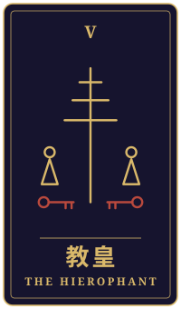
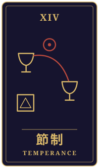

折り返し場
物語の手前に、ひとつの相談がありました。三枚のタロットをめぐるやりとりを、聞こえたままに書き留めています。
持ち込まれた相談
十五年前、子どもを連れて福島から埼玉へ逃げてきました。妻は数年で故郷へ戻り、私だけが残って、そのまま家族はばらばらになりました。今は路線バスを運転しています。今日、同じように避難した人たちが住まいを追われる裁判に負けたと知って、胸がざわついて仕事が手につきませんでした。実家の父は八十を過ぎ、帰ってこいと電話のたびに言います。息子も向こうで働き始めました。帰るべきなのはわかっているのに、ここで築いた小さな暮らしを手放したくない自分がいます。あのとき逃げたことが正しかったのか、今も答えが出せません。私はこの先、どこで暮らしていけばいいのでしょうか。
タロットの読み解き

過去
教皇・逆位置
十五年前のあの日、あなたは子どもさんの手を引いて、まずは生きるために動かれたのですね。教皇の逆位置は、こうあるべきだという決まりや形にとらわれず、そこから離れようとする力を示しています。あのときのあなたも、「家族は一緒にいるもの」「故郷に留まるべきだ」という周りの声に、静かに反発していたのかもしれません。

現在
節制・逆位置
今のあなたの心は、二つの場所の間で揺れていて、天秤がなかなか釣り合わない状態に見えます。節制の逆位置は、気持ちと体、過去と今が噛み合わず、ざわつく時期を表すことがあります。裁判のニュースに胸が騒いだのも、その不調和がふと表に出てきたからかもしれませんね。

未来
隠者・正位置
隠者の正位置は、人の輪から離れて、自分の内側に灯りを向ける姿です。この先に見えるのは、誰かに答えをもらうことより、ひとりで静かに考える時間かもしれません。父上の声も、息子さんの歩みも、ここで築いた暮らしも、いったん並べて、何を大切にしたいのかを見つめてみてはどうでしょう。
最後に
「あのときの選択は正しかったか」という問いは、今すぐ答えを出さなくてもよいものだと、カードは語りかけているように感じます。どこで暮らすかは、心と生活が少し落ち着いて見えてきたときに、家族や信頼できる人と言葉を交わしながら決めていけるものです。答えを急がなくてもよいのだと、ご自分に許してあげてもよいのではないでしょうか。逃げたことも、残ったことも、あなたがここまで懸命に生きてきた証なのですね。
帰り際の問い騒がしさを離れて、自分は何を確かめたいのか。
読み解きは、タロット占い「月夜のアルカナ」が、この相談と引かれた三枚から返したものです。小説は同じ三枚を、別の角度から描いています。相談者は物語のための架空の人物です。相談文・読み解き・短編本文は、いずれも生成AIを使って制作しています。
物語に戻る